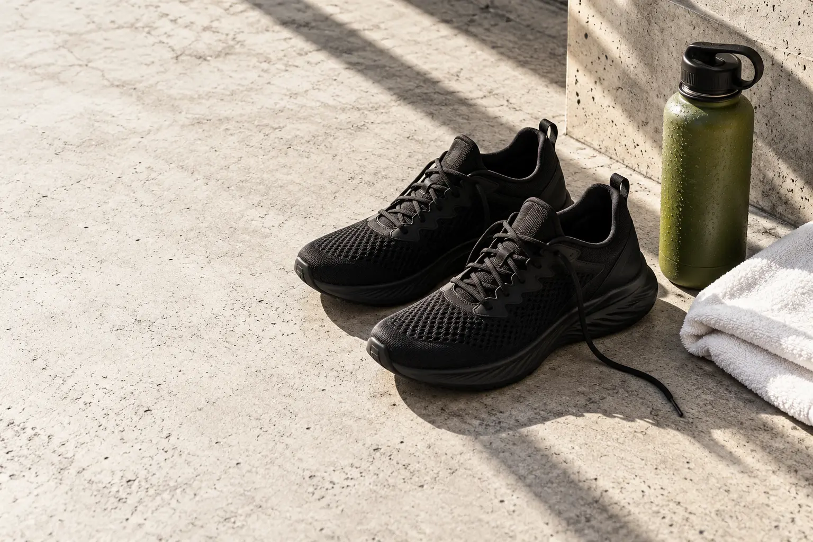
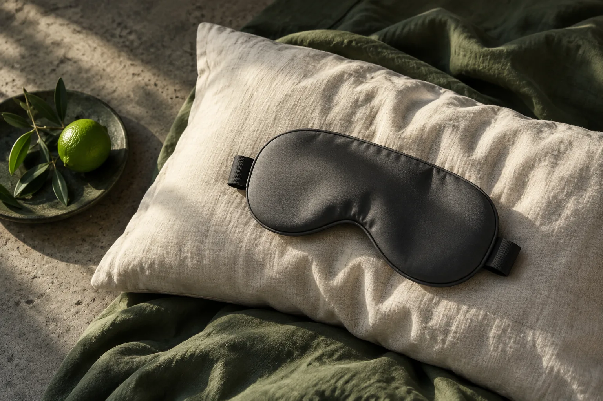
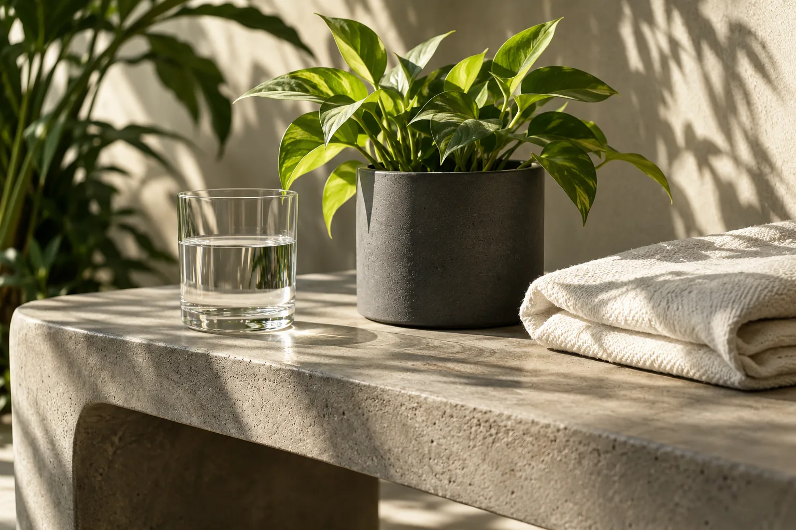

Hábitos reales. Una vida más tuya.
Activa tuequilibrio.
Cuida tu mente. Mueve tu cuerpo.
Nutre tu día. Descansa mejor.
Pequeños pasos. Todos los días.

Mente ↗Movimiento ↗Alimentación ↗Descanso ↗Tu propio ritmo ↗
Cuatro
pilares.
Tu propio
ritmo.
No necesitas cambiarlo todo. Encuentra una pequeña acción con la que empezar hoy.
Mente
Claridad para tu día a día.
 02
02Movimiento
Un cuerpo activo, a tu propio ritmo.
 03
03Alimentación
Comida real que te hace bien.
 04
04Descanso
Mejores noches. Nuevos comienzos.

Tu siguiente pasoMenos presión.
Menos presión.
Más acción.
Elige cómo quieres cuidarte. Una pausa, un poco de movimiento, una idea para comer o un momento para descansar.
Organiza tu día
Bienestar para la vida realNo es una meta.
No es una meta.
Es tu camino.
VITAL conecta mente, movimiento, alimentación y descanso en un mismo espacio. Sin competir con nadie: con herramientas sencillas para construir tu propia rutina.
Conoce nuestro enfoque↗